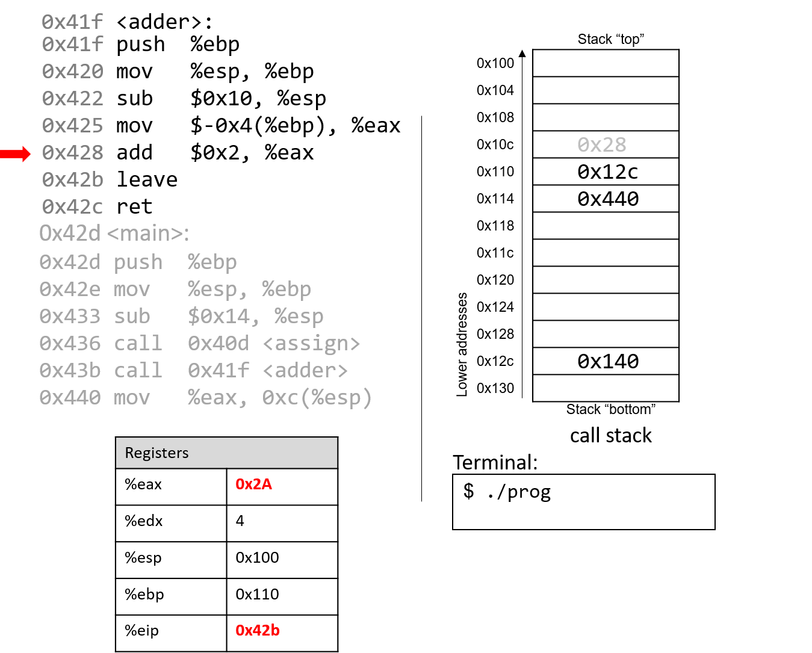
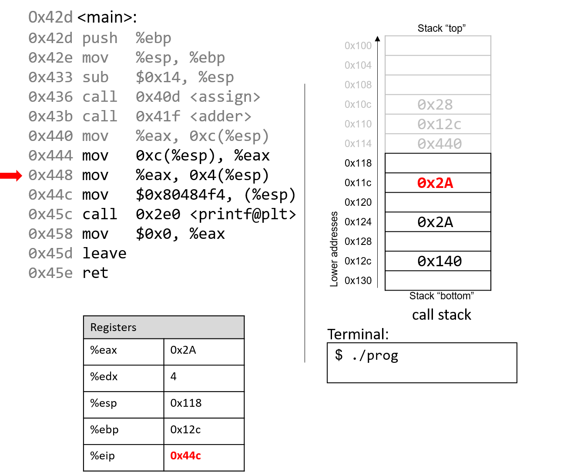
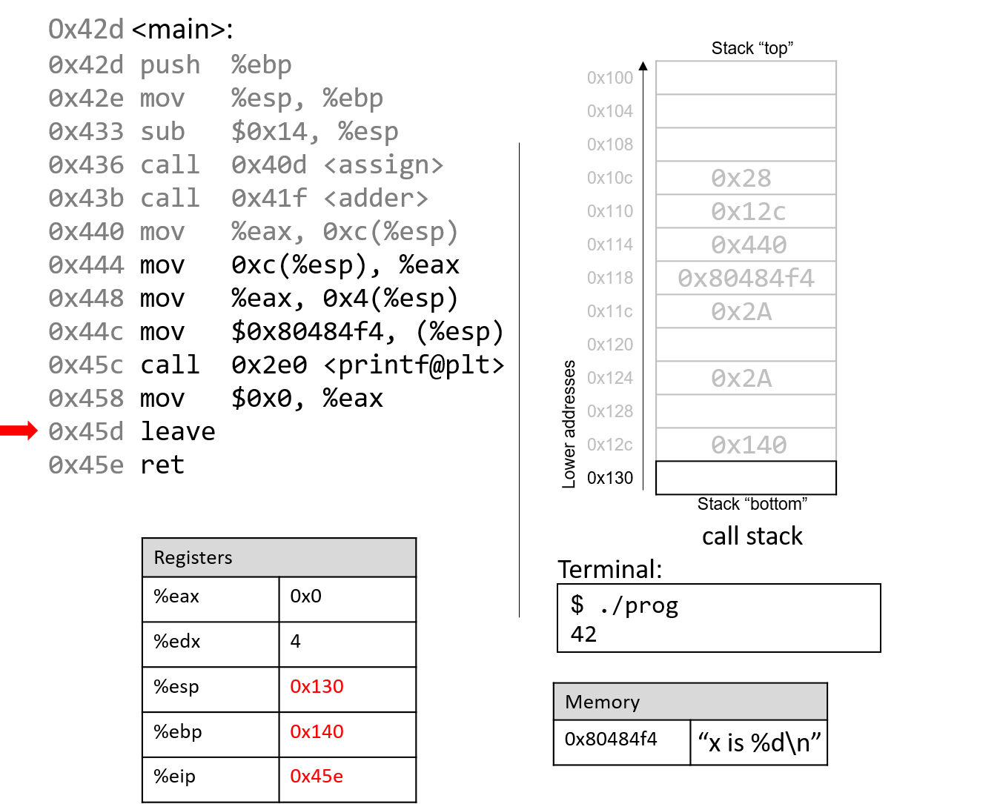

8.5. Functions trong Assembly
Ở phần trước, chúng ta đã lần theo quá trình thực thi của các hàm đơn giản trong assembly.
Trong phần này, chúng ta sẽ tìm hiểu cách nhiều hàm tương tác với nhau trong assembly trong bối cảnh của một chương trình lớn hơn.
Chúng ta cũng sẽ giới thiệu một số lệnh mới liên quan đến việc quản lý hàm.
Hãy bắt đầu bằng việc ôn lại cách call stack được quản lý.
Hãy nhớ rằng %esp là stack pointer (con trỏ stack) và luôn trỏ tới đỉnh của stack.
Thanh ghi %ebp là base pointer (hay frame pointer) và trỏ tới đáy của stack frame hiện tại.
Stack frame (còn gọi là activation frame hoặc activation record) là phần của stack được cấp phát cho một lần gọi hàm.
Hàm đang thực thi luôn nằm ở đỉnh stack, và stack frame của nó được gọi là active frame.
Active frame được giới hạn bởi stack pointer (ở đỉnh stack) và frame pointer (ở đáy frame).
Activation record thường chứa các biến cục bộ và tham số của hàm.
Hình 1 cho thấy các stack frame của main và một hàm mà nó gọi tên là fname.
Chúng ta sẽ gọi hàm main là caller (hàm gọi) và fname là callee (hàm được gọi).

Hình 1. Quản lý stack frame
Trong Hình 1, active frame (stack frame đang hoạt động) thuộc về hàm callee (fname).
Vùng bộ nhớ giữa stack pointer và frame pointer được dùng để lưu các biến cục bộ.
Stack pointer sẽ thay đổi khi các giá trị cục bộ được push hoặc pop khỏi stack.
Ngược lại, frame pointer hầu như giữ nguyên, trỏ tới điểm bắt đầu (đáy) của stack frame hiện tại.
Vì lý do này, các compiler như GCC thường tham chiếu tới các giá trị trên stack dựa theo frame pointer.
Trong Hình 1, active frame được giới hạn phía dưới bởi base pointer của fname, chứa địa chỉ stack 0x418.
Giá trị lưu tại địa chỉ này là giá trị %ebp đã được “lưu” (0x42c), bản thân nó chỉ ra đáy của activation frame của hàm main.
Đỉnh của activation frame của main được giới hạn bởi return address, cho biết địa chỉ trong chương trình mà main sẽ tiếp tục thực thi khi hàm callee kết thúc.
Return address trỏ tới bộ nhớ chương trình, không phải bộ nhớ stack
Hãy nhớ rằng vùng call stack (stack memory) của một chương trình khác với vùng code (code memory).
%ebpvà%esptrỏ tới các vị trí trong stack memory, còn%eiptrỏ tới một vị trí trong code memory.
Nói cách khác, return address là một địa chỉ trong code memory, không phải stack memory:
Hình 2. Các phần trong không gian địa chỉ của một chương trình

Bảng 1. Các lệnh quản lý hàm thông dụng
| Instruction | Translation |
|---|---|
leave | Chuẩn bị stack để thoát khỏi hàm. Tương đương: |
mov %ebp, %esp | |
pop %ebp | |
call addr <fname> | Chuyển active frame sang hàm callee. Tương đương: |
push %eip | |
mov addr, %eip | |
ret | Khôi phục active frame về hàm caller. Tương đương: |
pop %eip |
Ví dụ, lệnh leave là dạng viết tắt mà compiler dùng để khôi phục stack pointer và frame pointer khi chuẩn bị thoát khỏi hàm.
Khi hàm callee kết thúc, leave đảm bảo frame pointer được khôi phục về giá trị trước đó.
Hai lệnh call và ret đóng vai trò quan trọng khi một hàm gọi hàm khác.
Cả hai đều thay đổi instruction pointer (%eip).
Khi hàm caller thực thi call, giá trị hiện tại của %eip được lưu trên stack như return address — địa chỉ trong chương trình mà caller sẽ tiếp tục thực thi khi callee kết thúc.
call cũng thay thế giá trị %eip bằng địa chỉ của hàm callee.
Lệnh ret khôi phục %eip từ giá trị lưu trên stack, đảm bảo chương trình tiếp tục tại địa chỉ được chỉ định trong hàm caller.
Bất kỳ giá trị trả về nào từ callee sẽ được lưu trong %eax.
ret thường là lệnh cuối cùng trong mọi hàm.
8.5.1. Lần theo một ví dụ
Dựa trên kiến thức về quản lý hàm, hãy lần theo ví dụ code đã được giới thiệu ở đầu chương:
#include <stdio.h>
int assign(void) {
int y = 40;
return y;
}
int adder(void) {
int a;
return a + 2;
}
int main(void) {
int x;
assign();
x = adder();
printf("x is: %d\n", x);
return 0;
}
Chúng ta biên dịch code với cờ -m32 và dùng objdump -d để xem code assembly.
Lệnh này xuất ra một file khá lớn với nhiều thông tin không cần thiết.
Dùng less và chức năng tìm kiếm để trích xuất các hàm adder, assign và main:
804840d <assign>:
804840d: 55 push %ebp
804840e: 89 e5 mov %esp,%ebp
8048410: 83 ec 10 sub $0x10,%esp
8048413: c7 45 fc 28 00 00 00 movl $0x28,-0x4(%ebp)
804841a: 8b 45 fc mov -0x4(%ebp),%eax
804841d: c9 leave
804841e: c3 ret
0804841f <adder>:
804841f: 55 push %ebp
8048420: 89 e5 mov %esp,%ebp
8048422: 83 ec 10 sub $0x10,%esp
8048425: 8b 45 fc mov -0x4(%ebp),%eax
8048428: 83 c0 02 add $0x2,%eax
804842b: c9 leave
804842c: c3 ret
0804842d <main>:
804842d: 55 push %ebp
804842e: 89 e5 mov %esp,%ebp
8048433: 83 ec 20 sub $0x14,%esp
8048436: e8 d2 ff ff ff call 804840d <assign>
804843b: e8 df ff ff ff call 804841f <adder>
8048440: 89 44 24 1c mov %eax,0xc(%esp)
8048444: 8b 44 24 1c mov 0xc(%esp),%eax
8048448: 89 44 24 04 mov %eax,0x4(%esp)
804844c: c7 04 24 f4 84 04 08 movl $0x80484f4,(%esp)
8048453: e8 88 fe ff ff call 80482e0 <printf@plt>
8048458: b8 00 00 00 00 mov $0x0,%eax
804845d: c9 leave
804845e: c3 ret
Mỗi hàm bắt đầu bằng một nhãn ký hiệu (symbolic label) tương ứng với tên hàm trong chương trình.
Ví dụ, <main>: là nhãn ký hiệu cho hàm main.
Địa chỉ của nhãn hàm cũng là địa chỉ của lệnh đầu tiên trong hàm đó.
Để tiết kiệm không gian trong các hình minh họa tiếp theo, chúng ta rút gọn địa chỉ xuống 12 bit thấp.
Ví dụ, địa chỉ chương trình 0x804842d sẽ được hiển thị là 0x42d.
8.5.2. Lần theo hàm main
Hình 3 cho thấy execution stack ngay trước khi thực thi main.

Hình 3 minh họa trạng thái ban đầu của các thanh ghi CPU và call stack trước khi thực thi hàm main.
Hãy nhớ rằng stack phát triển về phía địa chỉ thấp hơn.
Trong ví dụ này, %ebp có giá trị địa chỉ 0x140 và %esp là 0x130 (cả hai giá trị này chỉ là giả định).
Các thanh ghi %eax và %edx ban đầu chứa giá trị rác.
Mũi tên đỏ (góc trên bên trái) chỉ ra lệnh đang được thực thi.
Ban đầu, %eip chứa địa chỉ 0x42d, là địa chỉ trong bộ nhớ chương trình của dòng đầu tiên trong hàm main.
Hãy cùng lần theo quá trình thực thi của chương trình.

Lệnh đầu tiên push giá trị của %ebp lên stack, lưu địa chỉ 0x140.
Vì stack phát triển về phía địa chỉ thấp hơn, stack pointer %esp được cập nhật thành 0x12c (giảm 4 byte so với 0x130).
Thanh ghi %eip tăng lên để trỏ tới lệnh tiếp theo.

Lệnh tiếp theo (mov %esp, %ebp) cập nhật giá trị của %ebp thành giá trị của %esp.
Frame pointer (%ebp) giờ trỏ tới đầu stack frame của hàm main.
%eip tiếp tục trỏ tới lệnh kế tiếp.

Lệnh sub trừ 0x14 khỏi địa chỉ trong stack pointer, “mở rộng” stack thêm 20 byte.
%eip trỏ tới lệnh tiếp theo, đây là lệnh call đầu tiên.

Lệnh call <assign> sẽ push giá trị trong %eip (địa chỉ của lệnh tiếp theo sẽ thực thi) lên stack.
Vì lệnh tiếp theo sau call <assign> có địa chỉ 0x43b, giá trị này được đẩy lên stack làm return address.
Hãy nhớ rằng return address cho biết chương trình sẽ tiếp tục thực thi ở đâu khi hàm kết thúc và quay lại main.
Sau đó, lệnh call sẽ đưa địa chỉ của hàm assign (0x40d) vào %eip, báo hiệu rằng chương trình sẽ tiếp tục thực thi trong hàm được gọi (assign) thay vì lệnh tiếp theo trong main.

Hai lệnh đầu tiên trong hàm assign là các thao tác khởi tạo mà mọi hàm đều thực hiện.
Lệnh đầu tiên push giá trị trong %ebp (địa chỉ 0x12c) lên stack.
Hãy nhớ rằng địa chỉ này trỏ tới đầu stack frame của main.
%eip trỏ tới lệnh thứ hai trong assign.

Lệnh tiếp theo (mov %esp, %ebp) cập nhật %ebp để trỏ tới đỉnh stack, đánh dấu bắt đầu stack frame của assign.
Instruction pointer (%eip) trỏ tới lệnh kế tiếp trong assign.

Lệnh sub tại địa chỉ 0x410 mở rộng stack thêm 16 byte, tạo không gian lưu trữ giá trị cục bộ và cập nhật %esp.
Instruction pointer tiếp tục trỏ tới lệnh kế tiếp trong assign.

Lệnh mov tại địa chỉ 0x413 đưa giá trị $0x28 (tức 40) vào vị trí -0x4(%ebp) trên stack, tức là 4 byte phía trên frame pointer.
Hãy nhớ rằng frame pointer thường được dùng để tham chiếu tới các vị trí trên stack.
%eip trỏ tới lệnh kế tiếp trong assign.

Lệnh mov tại địa chỉ 0x41a đưa giá trị $0x28 vào thanh ghi %eax, là nơi lưu giá trị trả về của hàm.
%eip trỏ tới lệnh leave trong assign.

Tại thời điểm này, hàm assign gần như đã thực thi xong.
Lệnh tiếp theo được thực thi là lệnh leave, lệnh này chuẩn bị stack để trả về từ lời gọi hàm.
Hãy nhớ rằng leave tương đương với cặp lệnh sau:
mov %ebp, %esp
pop %ebp
Nói cách khác, CPU ghi đè giá trị của stack pointer bằng giá trị của frame pointer.
Trong ví dụ này, stack pointer ban đầu được cập nhật từ 0x100 thành 0x110.
Tiếp theo, CPU thực thi pop %ebp, lấy giá trị tại địa chỉ 0x110 (trong ví dụ này là 0x12c) và đặt vào %ebp.
Hãy nhớ rằng 0x12c là điểm bắt đầu của stack frame dành cho main.
%esp trở thành 0x114 và %eip trỏ tới lệnh ret trong hàm assign.

Lệnh cuối cùng trong assign là ret. Khi ret được thực thi, địa chỉ trả về sẽ được lấy ra khỏi stack và đưa vào thanh ghi %eip.
Trong ví dụ này, %eip được cập nhật để trỏ tới lời gọi hàm adder.
Một số điểm quan trọng cần lưu ý tại thời điểm này:
- Stack pointer và frame pointer đã được khôi phục về giá trị trước khi gọi
assign, phản ánh rằng stack frame củamainlại trở thành active frame. - Các giá trị cũ trên stack từ stack frame trước đó không bị xóa. Chúng vẫn tồn tại trên call stack.

Lời gọi hàm adder ghi đè địa chỉ trả về cũ trên stack bằng một địa chỉ trả về mới (0x440).
Địa chỉ này trỏ tới lệnh sẽ được thực thi tiếp theo sau khi adder trả về, đó là mov %eax, 0xc(%ebp).
%eip lúc này trỏ tới lệnh đầu tiên trong adder tại địa chỉ 0x41f.

Lệnh đầu tiên trong hàm adder lưu frame pointer của hàm gọi (%ebp của main) lên stack.

Lệnh tiếp theo cập nhật %ebp bằng giá trị hiện tại của %esp (địa chỉ 0x110).
Hai lệnh này cùng nhau thiết lập điểm bắt đầu của stack frame cho adder.

Lệnh sub tại địa chỉ 0x422 “mở rộng” stack thêm 16 byte.
Lưu ý rằng việc mở rộng stack không ảnh hưởng tới các giá trị đã tồn tại trước đó trên stack.
Những giá trị cũ sẽ vẫn nằm trên stack cho tới khi bị ghi đè.

Hãy chú ý tới lệnh tiếp theo:
mov $-0x4(%ebp), %eax.
Lệnh này di chuyển một giá trị cũ đang nằm trên stack vào thanh ghi %eax!
Điều này xảy ra trực tiếp do lập trình viên quên khởi tạo biến a trong hàm adder.

Lệnh add tại địa chỉ 0x428 cộng 2 vào giá trị trong %eax.
Hãy nhớ rằng IA32 truyền giá trị trả về qua %eax.
Hai lệnh cuối này tương đương với đoạn code trong adder:
int a;
return a + 2;

Sau khi leave được thực thi, frame pointer lại trỏ tới đầu stack frame của main (0x12c).
Stack pointer lúc này chứa địa chỉ 0x114.

Lệnh ret lấy địa chỉ trả về ra khỏi stack, khôi phục %eip về 0x440 — địa chỉ của lệnh tiếp theo trong main.
%esp lúc này là 0x118.

Lệnh mov %eax, 0xc(%esp) đặt giá trị trong %eax vào vị trí cách %esp 12 byte (tức ba ô nhớ).

Bỏ qua một vài bước, các lệnh mov tại địa chỉ 0x444 và 0x448 gán %eax bằng giá trị lưu tại %esp+12 (0x2A) và đặt 0x2A vào vị trí ngay dưới đỉnh stack (%esp + 4, tức 0x11c).

Lệnh tiếp theo (mov $0x80484f4, (%esp)) sao chép một hằng số là địa chỉ bộ nhớ lên đỉnh stack.
Địa chỉ này (0x80484f4) chứa chuỗi "x is %d\n".
%eip trỏ tới lời gọi hàm printf (<printf@plt>).

Để ngắn gọn, chúng ta sẽ không lần theo hàm printf (thuộc stdio.h).
Tuy nhiên, theo trang hướng dẫn (man -s3 printf), printf có dạng:
int printf(const char * format, ...);
Nói cách khác, tham số đầu tiên là con trỏ tới chuỗi định dạng, các tham số tiếp theo là các giá trị được chèn vào định dạng đó.
Các lệnh từ 0x444 đến 0x45c tương ứng với dòng code trong main:
printf("x is %d\n", x);
Khi printf được gọi:
- Địa chỉ trả về (lệnh sẽ thực thi sau
printf) được đẩy lên stack. - Giá trị
%ebpđược đẩy lên stack, và%ebpđược cập nhật để trỏ tới đỉnh stack, đánh dấu bắt đầu stack frame củaprintf.
Tại một thời điểm nào đó, printf sẽ truy cập các tham số của nó: chuỗi "x is %d\n" và giá trị 0x2A.
Hãy nhớ rằng địa chỉ trả về nằm ngay dưới %ebp tại %ebp+4.
Tham số đầu tiên nằm tại %ebp+8 (ngay dưới địa chỉ trả về), tham số thứ hai tại %ebp+12.
Với một hàm có n tham số, GCC đặt tham số thứ nhất tại %ebp+8, tham số thứ hai tại %ebp+12, và tham số thứ n tại (%ebp+8) + (4*(n-1)).
Sau khi printf được gọi, giá trị 0x2A được in ra màn hình ở dạng số nguyên, tức là in ra 42.

Sau khi gọi printf, một vài lệnh cuối sẽ dọn dẹp stack và chuẩn bị thoát khỏi main.
Đầu tiên, giá trị 0x0 được đặt vào %eax, báo hiệu rằng main trả về 0.
Hãy nhớ rằng chương trình trả về 0 để biểu thị kết thúc thành công.

Sau khi leave và ret được thực thi, stack pointer và frame pointer trở về giá trị ban đầu trước khi main chạy.
Với 0x0 trong %eax, chương trình trả về 0.
Nếu bạn đã đọc kỹ phần này, bạn sẽ hiểu vì sao chương trình in ra giá trị 42.
Về bản chất, chương trình đã vô tình sử dụng các giá trị cũ trên stack, khiến nó hoạt động theo cách không mong đợi.
Ví dụ này khá vô hại, nhưng ở các phần sau, chúng ta sẽ thấy cách hacker lợi dụng lời gọi hàm để khiến chương trình hoạt động sai lệch theo hướng thực sự nguy hiểm.